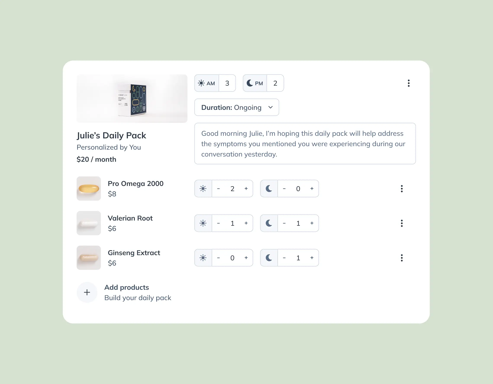
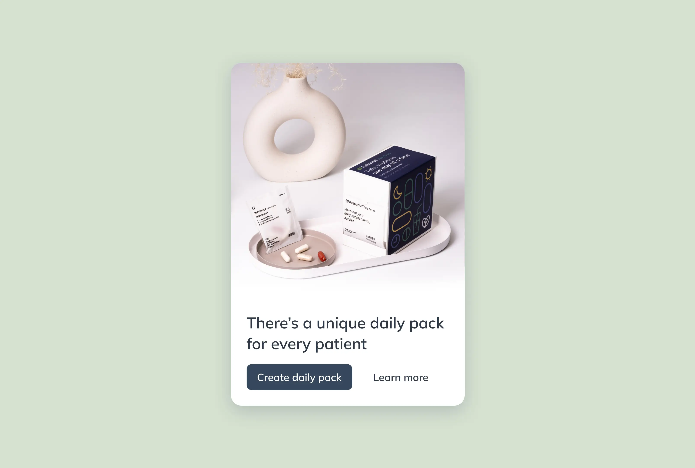
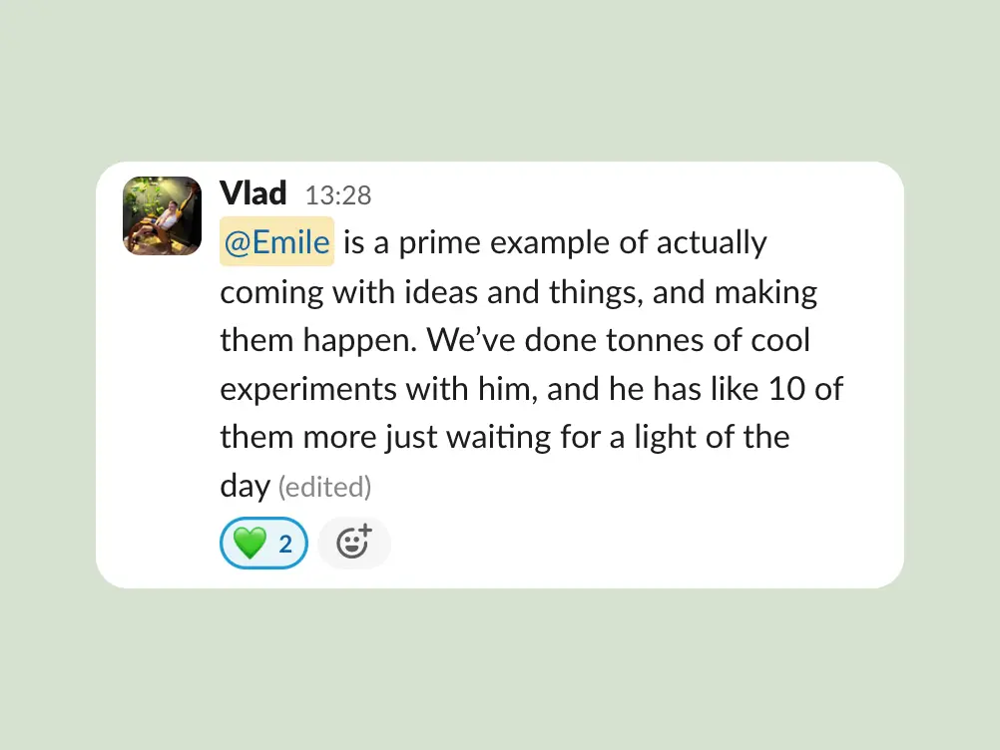

A tool that allows health practitioners to send supplement recommendations on Fullscript to simplify patient adherence via personalized intake forms.
Role
Lead designer
Timeline
Jan-May 2023
Platform
Desktop & mobile
Unless you already do so, receiving a new plan from a practitioner involves a new routine: taking the recommended products daily. Like any other habit, getting it right from the start can be tricky.
Practitioners will often recommend multiple products to their patients. The more products, the easier it is to lose track of a regimen, the more likely the patient will fail to stick to the plan. Practitioners care that their patients can follow the plan, and our preliminary research showed it. Mostly with follow-up messages, supporting resources, weekly pill boxes, or even easing a patient into multiple products over months.
Give practitioners the ability to create, customize, and save “Daily Packs” for patients, providing them with an accessible and subscribable monthly top-up that’s easier to stick to.
 🚧 Contruction zone, page will open soon. 🚧